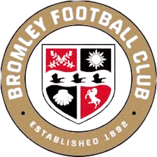
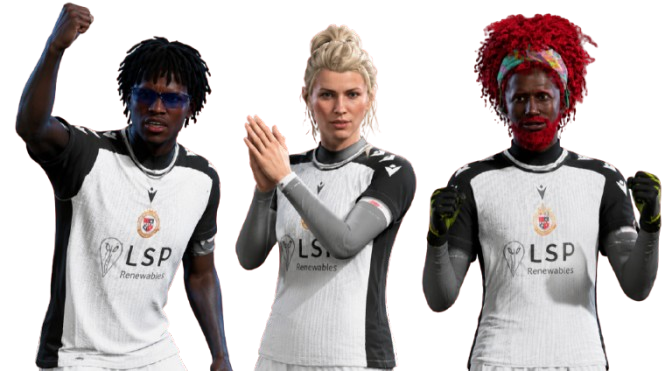

Welcome to the official home of VFL Bromley F.C. Pro Clubs — a team built on passion, loyalty, and the relentless drive to dominate every match we step into. VFL Bromley F.C. isn’t just a club; it’s a community, a brotherhood, and a place where every player, supporter, and friend becomes part of something bigger. At the heart of the club stands our owner, GafferN5, the driving force behind the team’s identity, ambition, and competitive spirit. His leadership sets the tone for everything we do, from the way we play to the standards we hold ourselves to. Supporting him are the two co‑owners, Bangz and Ahmz, who bring their own energy, vision, and commitment to pushing VFL Bromley F.C. to new heights. Together, this trio forms the backbone of the club — a powerhouse leadership team that keeps the squad motivated, organised, and always hungry for more. Whether you're here to check out our achievements, learn about our players, follow our stats, or join our growing community, VFL Bromley F.C. welcomes you with open arms. This is where passion meets performance, where friendships turn into family, and where every match is another chance to prove why VFL Bromley F.C. is one of the most exciting Pro Clubs teams around. Check out the other tabs above to learn more information about the club.
